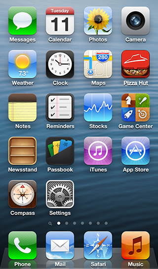

Pizza Hut introduced a new set of red pizza boxes and were looking to refresh their app icon to match these. To give a sense of depth, a 3D effect is used with the box being slightly open and showing some delicious pizza inside.

Other Works
{% include related.html item="epoch" collection=site.portfolio %}
{% include related.html item="mediaportal" collection=site.portfolio %}